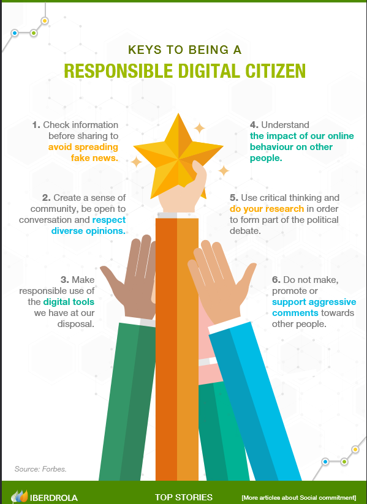

Many have seen the internet as a place where you can be whatever you want to be, you don't have to rely on others and you can trust any source because the source is trustworthy. Though most of this is true, there has always been a small group that intends to use the internet for their own personal means; theft, misinformation and manipulation. We are at a time where ethical internet is necessary for everyone as people are being fed into believing false information and where people are now making AI models to speak on behalf of their creators/masters, this past weeks incident on social media platform X has shown this to us. We are becoming more interconnected on the internet but in turn, we sacrifice the time we spend to focus on ourselves or with others and we have become jaded to reality.
The debate around an ethical internet focuses on the need to apply legislative laws and barriers that are on the grounds of protecting our society. However, implementing has proven too long and requires a more diverse community that can provide their our reasons for using the internet. So what I have researched is a list of things we can do as digital citizens in this new age:
Though these I still think we should open the conversation. Having a general baseline on how we should use and navigate the internet is important, otherwise we would more susceptible to a companies whims, especially when it comes to personal information and data.
Iberdrola. (n.d.). Internet Ethics: a Key Part of the Digital Future. [online] Available at: https://www.iberdrola.com/social-commitment/digital-ethics [Accessed 20 May 2025].